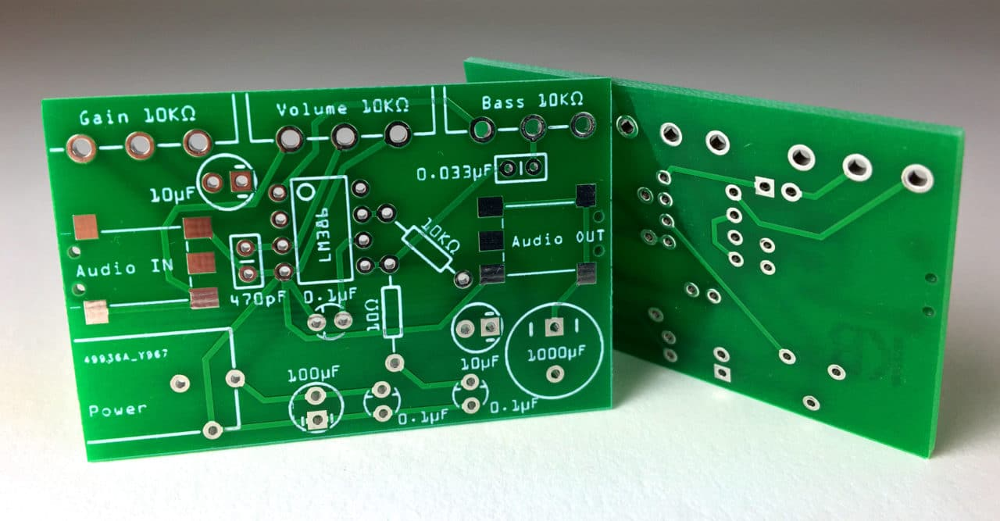
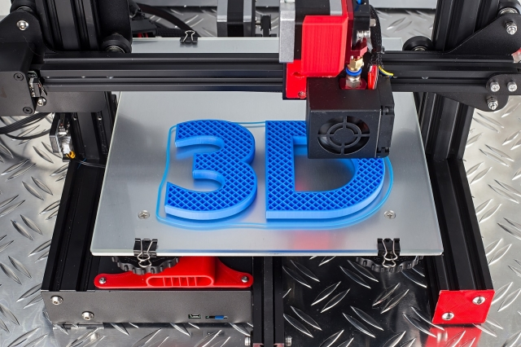
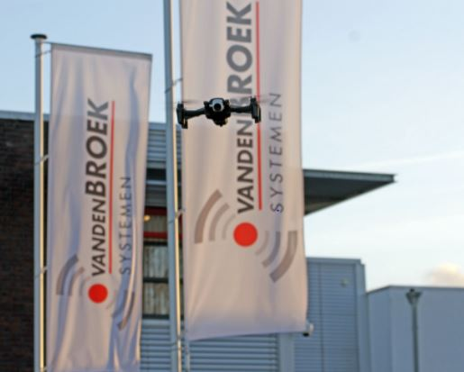

Een PCB, in de volksmond ook wel printplaat, is een plaat met schakelingen die elektronische componenten met elkaar verbinden. Een printplaat wordt vandaag de dag veel gebruikt in computers en andere elektronische apparaten en worden gemaakt van een elektrisch niet geleidend metaal.
Op een printplaat kunnen elektrische componenten vastgemaakt worden, die op zogenaamde pads vast gesoldeerd kunnen worden aan de printplaat. Door koperen sporen kunnen deze compontenten weer onderling aan elkaar verbonden worden en dit zorgt voor de vereiste elektrische verbinden tussen de componenten aangezien deze elektrisch geleiden. Dat is ook de reden waarom de rest van de printplaat gemaakt is van een niet geleidend materiaal.
Het probleem wat vandaag de dag speelt is dat de grondstoffen waarvan de printplaten gemaakt worden niet of nauwelijks leverbaar zijn waardoor dit enorme vertraging oplevert in de productie, wat op zijn beurt weer leidt tot een toename in de prijs van deze elektrische apparaten. Zo neem ik als voorbeeld de PS5, deze is momenteel amper aan te komen doordat de juiste chips niet leverbaar zijn.
3D printen is het proces om een digitaal bestand om te zetten in een driedimensionaal tastbaar object. Zo’n tastbaar object is opgebouwd uit opeenvolgende lagen van filament totdat het volledige object gecreëerd is. Door gebruik te maken van deze lagen is het mogelijk om zeer complexe onderdelen te printen die anders lastig te produceren zijn. Deze lagen filament kun je eigenlijk zien als allemaal horizontale dwarsdoorsnedes van het eindproduct en deze worden vervolgens allemaal op elkaar gemonteerd. 
Bij 3D printen start je met het ontwerpen van een virtueel ontwerp van het eindproduct dat je wilt maken met 3d printen, dit is bijvoorbeeld een CAD-tekening. Dit ontwerp stuur je vervolgens naar de 3D printer die dit voor jou gedetailleerd en laagje voor laagje voor jou uit kan printen. 3D printen is momenteel een van de grootste toepassingen binnen de IoT-technologie en daarom zeker iets om binnen de Smart Industry toe te passen.
Voor het vak Smart Technology is opdracht om een IoT-schakeling te bouwen voor het automatiseren van de lichtintensiteit en aardevochtigheid van een plant. Zo wordt er aan de hand van een aantal meegeleverde sensoren en actuatoren een plantwatersysteem in elkaar gezet aan de hand van een aantal IoT technieken. Zo kan het systeem helemaal zelf de aardevochtigheid meten en vervolgens naar wens vocht toedienen
Om weer te geven wat ik allemaal heb gedaan voor Smart Technology heb ik het praktijk gedeelte opgesplits in een aantal stappen:
Stap 1:
Het kennismaken met alle componenten
Stap 2:
Het opleveren van een werkend prototype op een breadboard
Stap 3:
Het ontwerpen van een Printed Circuit Board
Stap 4:
Het 3D-printen van de case voor het plantwatersysteem
Via onderstaande button kun je het document openen waar alle stappen verduidelijkt worden.
Wanneer al deze stappen doorlopen zijn, hebben we een geautomatiseerd plantwatersysteem die in de praktijk gebruikt kan gaan worden. Zo is dit systeem ideaal om in huis te gebruiken. Hier in onderstaand filmpje een demonstratie van het plantwatersysteem:
Een geautomatiseerd plantwatersysteem kan voor een bedrijf
een zeer welkome toevoeging zijn, zo’n plantwatersysteem kan werk van mensen
uit handen nemen. Daarnaast wordt bijvoorbeeld de vochtigheid van de grond
continue bijgehouden en wanneer deze waarde niet naar wens is, wordt deze
waarde weer op de juiste waarde gebracht. Voor een mens is dit veel lastiger in
te schatten terwijl de controller het gewoon op waardes baseert. Wat dat betreft
is een geautomatiseerd plantwatersysteem een zeer nuttige toevoeging voor een
bedrijf wat planten kweekt.
Er zijn echter ook
nadelen, want voor een bedrijf is de aanschaf van zo’n systeem voor iedere
plant die ze kweken een hele dure investering en de vraag is of dat de moeite
waard is voor een kweker. De vraag is dus of de manuren en de betere kweek
zoveel opleveren dat de investering van het plantwatersysteem eruit gehaald kan
worden.
Persoonlijk denk ik dat een plantwatersysteem hoe die in deze
praktijkcasus is gedefinieerd niet interessant voor een kweker, echter zijn er
wel mogelijkheden voor alleen niet in deze vorm.
Wel kan dit plantwatersysteem prima gebruikt worden in een
huishouden wanneer je maar enkele plantjes bij hoeft te houden, het systeem kan
dan per plant aangesloten worden en de kosten hiervan zijn niet heel hoog. Daar
tegenover staat wel dat het ook maar een kleine moeite is om die plantjes iedere
dag een beetje water te geven, maar voor de luie mensen zou ik het zeker
adviseren. Nou ben ik zelf een lui persoon en heb ik toevallig een prototype in
huis, dus ik ga zeker proberen of het geautomatiseerde plantwatersysteem van
toegevoegde waarde kan zijn.
Smart Technology staat voor slimme technologieën, slimme technologieën zijn niet meer weg te denken uit ons dagelijks leven. Zonder dat je het ervaart maakt jij dagelijks gebruik van enkele van deze technologieën. Zo worden voorwerpen steeds slimmer en kunnen deze steeds meer. Industrie 4.0 is een belangrijke stap om hier nog verder in te kunnen ontwikkelen. Hierin is Internet of Things de toekomst en streven bedrijven er steeds meer naar om hier gebruik van te maken. Wanneer we deze toepassingen in een bedrijfscontext bekijken is wel interessant om eens te bekijken welke toepassingen van deze smart technologieën interessant kan zijn voor Van den Broek. Van den Broek is daar al veelvuldig mee bezig om steeds met de tijd mee te blijven gaan, zo is het toepassen van de autonome drone een van deze slimme technologieën die ze willen ontdekken. Maar ook bijvoorbeeld 3D-printen kan in de toekomst door Van den Broek gebruikt gaan worden om bepaalde voorwerpen te printen die gebruikt kunnen worden in de onderhoud van het beveiligingssysteem.
Ook bij de gastles van Geert Rensen van BeInformed hebben we de opdracht gekregen om een bepaalde business casus op te lossen door middel van smart oplossingen. Hierbij moest je denken aan bovenstaande slimme technologieën om toe te passen binnen AXA om hiermee een verschil te maken met de concurrentie. Voor bedrijven is het taak om zo snel mogelijk over te stappen naar deze smart technology omdat je anders simpelweg achter gaat lopen op de concurrentie die dit wel doet. Daarom is het verstandig voor alle bedrijven handig om dit zo veel mogelijk toe te passen, dit neem ik dan ook mee naar de bedrijven waar ik in de toekomst werkzaam ga zijn. Om te leren hoe je dit nou precies kunt doen, hebben wij deze business uitgewerkt:
AXA business casus